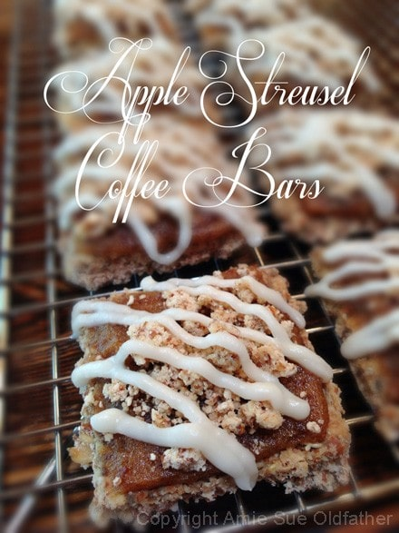
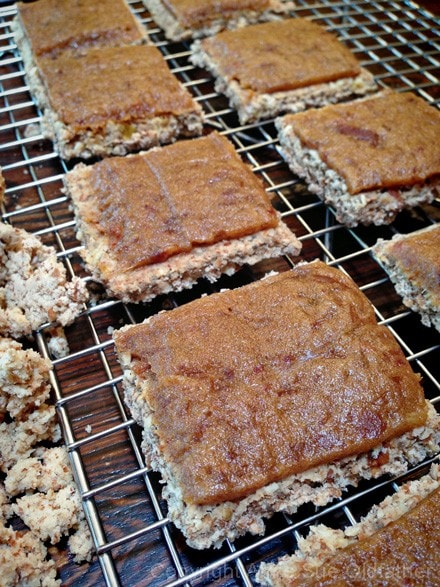
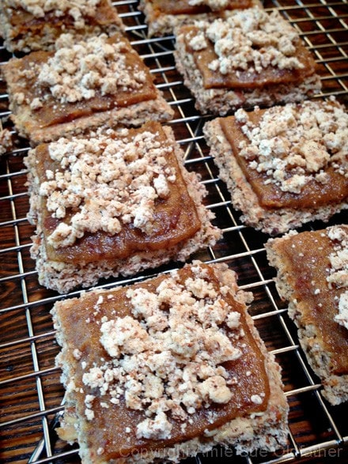
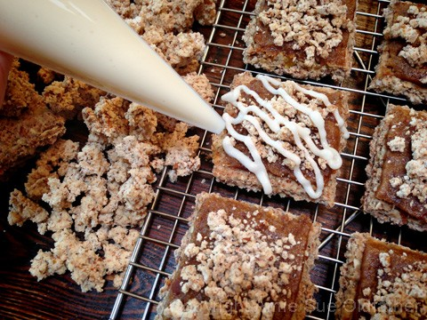

Apple Streusel Coffee Bars

Apple Streusel Coffee Bars
This recipe is my way of marrying together an apple streusel pastry and a coffee cake. Except my version is raw, gluten-free, and dairy-free.
Today’s post makes a lot of crackers, of course, you can always cut the ingredients in half if you want to. I used the almond pulp for the cracker base, which I have come to love using in my cracker recipes. It gives the cracker and light, airy, crunchy, and sturdy texture.
You can use ground nuts instead, but it will affect the texture and the taste. Even though there are several components to this dessert cracker, you will be amazed as to how simple each one is to make. This recipe makes a large quantity, so feel free to half or quarter the recipe.
Ingredients:
yields roughly 100 bars
Cracker:
Date paste:
Streusel Crumble:
- 2 cups packed, moist almond pulp
- 1/2 cup maple syrup
- 1 tsp ground Ceylon cinnamon
- 1/4 tsp Himalayan pink salt
Streusel Glaze:
Preparation:
Crackers:
- After soaking the pecans and almonds, drain and rinse them. If you already have soaked and dehydrated pecans and almonds in the pantry, use those.
- Place the pecans and almonds in the food processor, fitted with the “S” blade, and process until it resembles a small crumble. Place in a large bowl.
- Add the almond pulp to the ground nuts and mix. Set aside.
- In the same food processor bowl combine the apples, flaxseed, almond butter, chia seeds, maple syrup, cinnamon, salt, and stevia. Process until creamy. Pour over the nuts and almond pulp and mix together with your hands.
- Spread the cracker batter 1/4″ thick over the teflex sheet that comes with the dehydrator. Be careful that you don’t spread the batter too thin or the crackers will break too easily. I used 2 Excalibur trays, spreading the batter all the way to the edges.
- Score the crackers and dehydrate at 145 degrees (F) for 1 hour, then reduce to 115 degrees (F) for 6-8 hours. When dry enough, flip them over onto the mesh sheet and continue drying for another 6-8 hours or until completely dry.
Date paste:
- Click here for how to make date paste.
- Place 1-2 cups of date paste in a piping bag fitted with this tip. You can use a butter knife instead, but I just love using piping bags.
- If using the piping tip, lay the tip on the edge of the cracker and drag it across it while putting gentle and firm pressure on the bag. Stop the pressure once you get to the other side of the cracker and lift off. Do this to all the crackers.
Streusel Crumble:
- In a medium bowl combine the almond pulp, maple syrup, cinnamon, and salt. Mix with your hands to make sure everything is well incorporated.
- Drop the batter in small crumbles on the teflex sheet that comes with the dehydrator and dry at 115 degrees (F) for 4 hours or until dry.
- Sprinkle the crumbles on top of the date paste frosted cracker. Set aside.
- Store extra in a sealed container for up to 2 weeks.
Streusel Glaze:
- Soften the coconut butter but placing the jar in a large bowl and surrounding it with hot water.
- Drizzle the glaze over the cracker in a zigzag pattern. You can use a piping bag or a ziplock baggie with the bottom corner tip snipped off.
The Institute of Culinary Ingredients™
- To learn more about maple syrup by clicking (here).
- Dates are an amazing ingredient for raw food recipes, click (here) to read why.
- Why do I specify Ceylon cinnamon? Click (here) to learn why.
- What is Himalayan pink salt and does it really matter? Click (here) to read more about it.
- Is coconut butter the same as coconut oil? Click (here) to find out.
- Learn how to make your own raw almond butter by clicking (here).
- Learn how to grind your own flaxseeds for ultimate freshness and nutrition. Click (here).
Culinary Explanations:
- Why do I start the dehydrator at 145 degrees (F)? Click (here) to learn the reason behind this.
- When working with fresh ingredients, it is important to taste test as you build a recipe. Learn why (here).
- Don’t own a dehydrator? Learn how to use your oven (here). I do however truly believe that it is a worthwhile investment. Click (here) to learn what I use.



© AmieSue.com